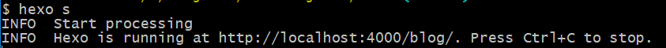
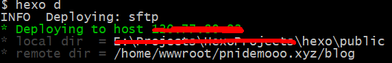

准备工作
- Git
- Node.js
安装Hexo
先更换npm源（此处为淘宝npm源）
npm config set registry https://registry.npm.taobao.org
npm info underscore （如果上面配置正确这个命令会有字符串response）
之后即可安装Hexo
npm install -g hexo-cli
配置Hexo
由于我选择的开源Hexo主题hexo-theme-huxblog 直接封装了整个hexo文件夹，所以不需要新建一个空文件夹来放hexo文件，直接clone即可。
git clone https://github.com/Kaijun/hexo-theme-huxblog.git
mv hexo-theme-huxblog hexo //名字改短点
cd hexo
npm install
_config.yml
根目录配置文件_config.yml，基本上根据提示改就行。
# URL
url: http://pnidemooo.xyz/blog
root: /blog/
...
# Disqus settings
disqus_username:
上边的Disqus的评论插件，翻墙才会显示。需要到该网站注册配置后将此处的用户名改为自己的即可。
Source/
Source/文件夹中存放了Blog内容的文件。其中_post中为各篇.md博文，同名文件夹内存放对应文章引用的图片。本模板的作者保留了几篇当作模板，删除即可。
写Blog
hexo new "Hello World" //双引号内为博文标题。
然后查看/source/_post即可看到新生成的.md文件及其文件夹。
生成和部署
生成
hexo generate //或简写成: hexo g
该命令下hexo会自动更新生成静态文件。产生的文件全部放置在public/文件夹内。可以将文件夹复制到任何想要的地方。
本地服务器查看
hexo server //或简写成: hexo s

部署至服务器
首次使用需要配置。
我使用的是sftp：
修改配置文件_config.yml。
deploy: type: sftp host: xxxxxxx user: xxxxxxx pass: xxxxxxx remotePath: /home/wwwroot/pnidemooo.xyz/blog/ port: 22 privateKey: passphrase: agent:部署
hexo deploy //或简写成: hexo d
之后remotePath指向的目录的目录结构同步成与本地public文件完全相同的目录结构。